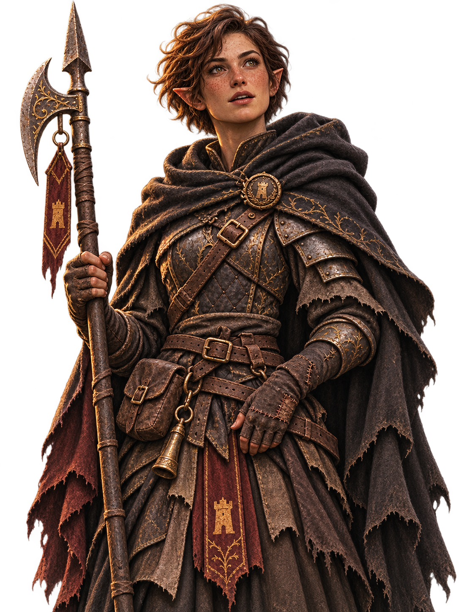

Runa Eirik
candidato
Pecas y guantes remendados legibles. La alabarda y el emblema requieren revisión de vestuario.
Prompt y referencias
Runa Eirik, a 25-year-old elf gate guard from Stormkeep, short chestnut hair, freckles, subtly pointed ears, a dark cloak and mended gloves, with an open and curious gaze. Three-quarter-length character, vertical 3:4, isolated on a transparent background, in the same visual style as the reference images, from the same set.